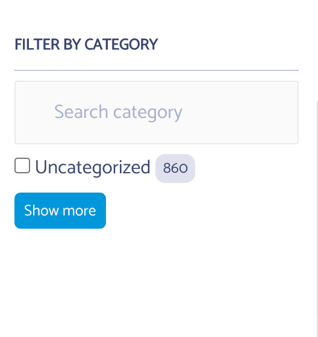

Customizing Instant Search Widgets
Since version 1.1.4 of the plugin two new filters have been added to customize Facets and the sort by widgets
- Facets :
cm_typesense_search_facet_settings - Sort BY :
cm_typesense_search_sortby_items
Facet Customization
To customize facets you can use the settings than can be passed to the refinementList, see available values here
A short example would be making Facet searchable and limit
function cm_typesense_facet_modifications( $facet_settings, $facet ) {
if ( $facet == 'category' ) {
$facet_settings = [
'searchable' => true,
'limit' => 1
];
}
return $facet_settings;
}
add_filter( 'cm_typesense_search_facet_settings', 'cm_typesense_facet_modifications', 10, 2 );
Here I'm checking that the facet is "category" and if it is I am modifying it to make the filter searchable and limit it to 1 result at time.
 End Result
Sort By Customization
You can only add items to sort by, to allow sorting by various fields. A word of caution this is dependent on your schema so please make sure you are only adding sortable fields here. You should see what are sortable fields in Typesense documentation here
Example to add sort by comment count the following code will work.
function cm_typesense_sortby_items( $items, $post_type ) {
if ( $post_type == 'post' ) {
$items[] = [ 'label' => 'Highest Comment Count', 'value' => $post_type . '/sort/comment_count:desc' ];
}
return $items;
}
add_filter( 'cm_typesense_search_sortby_items', 'cm_typesense_sortby_items', 10, 2 );
 End Result
End Result